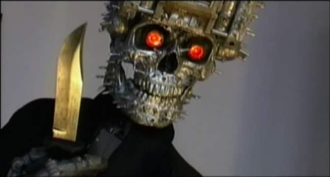
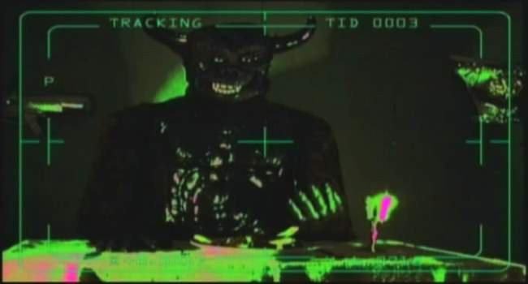
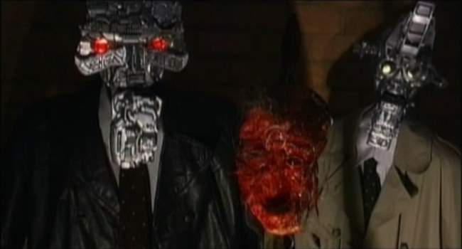
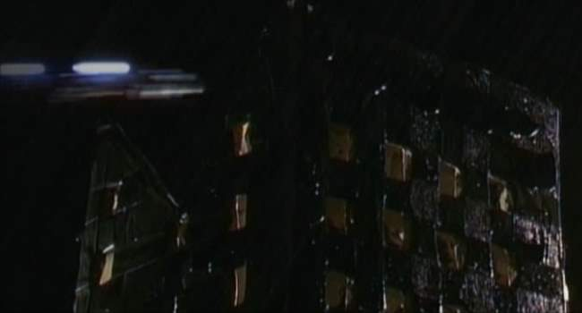
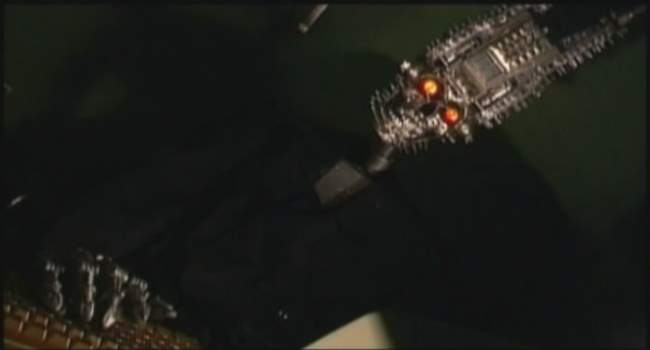
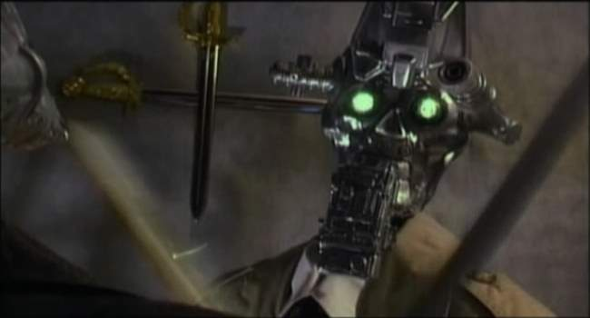

Movie review by : SFAM
Year : 2005
Directed by : Clive Cohen
Written by : Clive Cohen
Degree of Cyberpunk visuals : Low
Correlation to Cyberpunk themes : Low
Rating : 2/10

Overview: So you're really into big breasted chicks getting gored by robots, ey? If this is the variety of fetish porn you've been hankerin for, then Exterminator City is probably an automatic buy decision. One word of caution - you aren't really getting robots, you're getting a cheaper version of the old Muppet's skit, Pigs in Space-style robot puppets. Basically you get shiny plastic robot heads (are these supposed to be metal?) with movable jaws, mounted on dressed clothing racks. A real person wearing gloves is shemping the hand movements, while the lower jaw goes up and down to mimic talking (robots MUST have working jaws, right - I mean who would believe that robots would have speakers embedded in them!). Outside of this small, select market segment of geeks lusting after robot puppets bloodily whacking big breasted chicks off-camera, Exterminator City will probably get a hearty "WTF" from everyone else.
In the one intentionally funny moment of the film, Julie Strain dies by being bludgeoned with an Oscar statue (which occurs off-camera of course, as I don't think any of these girls even knew they were in this flick until after it was released).
The Story: In the near future (2027), the population is solely comprised of deranged robot puppets and big-breasted chicks who can't stop rubbing themselves. Worse, these chicks don't seem to be able to keep clothes on. Robot puppets handle all the work in society, while the bare-breasted chicks hang around their apartments waiting to get randomly gored in some bloody, off-camera moment. While this doesn't seem like all that successful a society on the face of it, we can only wonder what happened in the previous 20 years that led to this!

Unfortunately, the poor pesticide robot puppet has nightmares about hell. His response to the rubber demons? He treats them like big breasted chicks and chops them up!
Enter our star - the deranged robot exterminator puppet. For his day job, he's supposed to be killing the large rubber cockroaches that keep frequenting the bare-breasted chicks' apartments, but due to a eeeevil after-market robot parts salesman, now he looks at these chicks as bad girls who need his special services. But this is no ordinary deranged robot exterminator puppet. He's also a master hacker and top micro-electronics expert - he can create his own robot bugs that break into bare-breasted chick apartments! Better yet, he can instantaneously rip out a wall in the exact size of his human-sized robot puppet body, but can also shrink small enough to sneak through the small air ducts that permeate every big-breasted chick abode.

Exterminator City Dialogue Moment:
Police Detective Robot Puppet: "I knew this girl."
Mad Psychologist Robot Puppet: "You did?"
Police Detective Robot Puppet: "I put her away on three counts of drug violations."
Mad Psychologist Robot Puppet: "I'd say she's cured."
Meanwhile, a bumbling police detective robot puppet is on the case. He may seem useless but he's sure he'll catch the bad guy. What's his strategy for success? He hangs out with a mad psychologist robot puppet (who used to have the pest control robot puppet as a patient) and discusses each gruesome murder after it takes place. Usually they like to mount the most recent dead, bloody and now skinned big-breasted chick on a poll between them (see above) so they can discuss the specifics of her death.

This is the "Blade Runner" police HQ. Yes, in fact it does look like a cardboard box with squares cut out, covered with overlapping strips of spray-painted construction paper. But at least the light stays on, and the zippy things, which are supposed to be the police car, wiz by fast enough that you never get a good look at them.
The Pacing: The pacing in Exterminator City mimics standard porno movie. There is a brief, incoherent beginning scene, followed by a series of action shots that are broken up by brief, incoherent interludes. In this case, robot/bare big-breasted chick slasher porn comprises the action shots. The ending resolution ending scene bookends the front in that its also an incoherent moment that nobody cares about. Between each slasher porn sequence, he interlude shots in Exterminator City always start off with a fast light-car zipping past the cardboard building above followed by an inane puppet dialogue moment. Most often, the dialogue moment involves ridiculous conversations (or sword fights) between the detective robot puppet and the mad psychologist robot puppet, but sometimes we get a "hell" fantasy from the mind of our anti-hero pest control robot puppet. I'm guessing Cohen was trying for a "Space Ghost Coast-to-Coast" type feel for the interludes, but this is just a guess (he failed).
You can tell this scene is still early in the movie because the chick is hawt, can scream well and eventually takes off her top. Later on we get semi-ugly chicks, chicks that can't scream or worse, ones that won't disrobe!
Where Did the Big Breasted Chick Footage Come From?: While I know nothing about the making of this movie, I'd bet money that director Clive Cohen has never met any of these chicks. Far more likely, I'm guessing that Clive contracted with some cheesy modeling agency that had pre-made clips of all their "actresses" in a horror-scream type setting. In NONE of the 20+ bare-breasted chick killing scenes do we get any sense that they have a clue what's going on. Basically, each of them are in some kind of current-day house setting (working out, taking a shower, watching TV, etc.). After a few seconds of relaxation, they look toward the camera and start screaming. The scene then cuts to the deranged robot puppet axing, chopping, chainsawing or bludgeoning through fake skin of some kind. Julie Strain is the only one given more than 40 seconds screen time (she gets like 3-4 minutes). What's truly funny about this approach is how bad these chicks really are - not only in acting, which is expected, but in screaming. Some are truly horrid.

Robots need keyboards to hack into the police database!
Exterminator City Dialogue Moment:
Police Detective Robot Puppet: "He ain't coming back here no more"
"What makes you so sure?"
Police Detective Robot Puppet:"He had a trace on our trace. He knew we were watching him."
"So he won't hack the system again?"
Police Detective Robot Puppet: "He don't have to. He downloaded all files on route to the kill."
"So no stopping him now?"
Police Detective Robot Puppet: "You must be sooo proud."
"No detective. I am not."
Police Detective Robot Puppet: "I'll get him"
"How can you know that?"
Police Detective Robot Puppet: "That's my job, bitch."

And then a random plastic sword fight breaks out between the police detective and the mad psychologist. Why you ask? Um, don't ask why... Incidentally, in the close-ups of both puppets, they each have those crossed swords behind them (apparently the walls move quickly to keep the crossed swords in the shot). I think this is to help the viewer recognize that they are having a sword fight.
The Bottom Line: Often when watching a truly horrid flick, you find yourself wondering, "What did this director really want to accomplish?" In this case, its pretty clear - Cohen wanted to make robot slasher porn. Unfortunately he didn't have a budget, so he settled for robot puppet slasher porn that occurs off-screen. As bad as this "movie" is, I must say that a good number of the big-breasted chicks look really good. And I suppose there's something to be said for having massive quantities of big breasted chicks to make up for the monstrosity that is this movie. I honestly doubt that anyone besides Cohen actually worked this thing.
But give Cohen some credit: like any good porn movie he knows to keep the better action shots near the beginning, as most will tire of the movie long before the ending comes. As we get to the last third of the movie, the women are either uglier, really awful screamers or won't take off their clothes. For this organization philosophy, I'm giving Cohen an extra star in my rating (which brings my review to a grand total of 2 stars!). Unfortunately, this approach also means that near the end, we're stuck with a higher dose horrid dialogue between the detective and psychologist, along with the occasional rubber hell monster. Bottom line, if you do have a hankerin for big bare-breasted robot puppet slasher porn and need to see this, don't feel guilty in turning it off just after the halfway point.